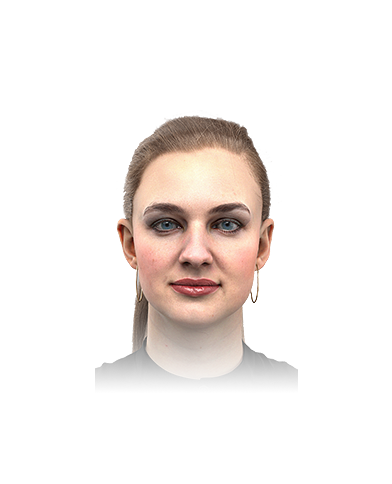

Теперь Вам необходимо определить внешние параметры будущего ребенка
пол
внешность
физические качества
Способности
темперамент
характер
HumanDesign
Возраст:
20 лет
Вы можете изменить возраст ребенка
Скрыть
тело
лицо
волосы
брови
глаза
нос
губы
уши
форма лица
подбородок

50%
50
Расстояние между глаз
32
Размер глаз
цвет глаз
Приподнятые
Форма глаз